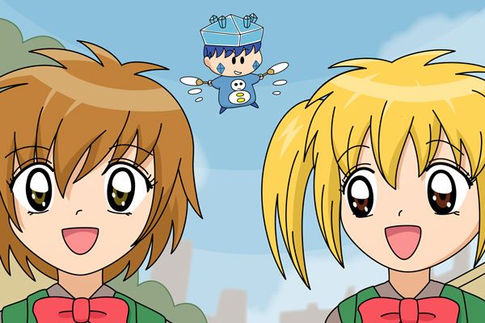

今回は掲示板の２００００カキコ記念絵を描きました。記念すべき２００００カキコ目はレインボーさん。リクエストをいただき、『楓とはるかのスカートを狙うコオル』を描きました。コオルとはレインボーさんのオリフェですね（いただきもの小説への掲載はもう少しお待ちを…）。
楓とはるかは絵の外で…ということでしたが、せっかくの機会なので挑戦してみました。いやぁ、普段は人間を全然描かないのでめちゃくちゃ時間がかかってしまいました。顔の輪郭とかホント難しいです。絵に立体感が無いのは今後の課題で。。コオルは帽子のデザインが難しかったですね。
次回は２５０００カキコ達成時にまたリクエストを募集したいと思います。今度は誰が踏むことになるのでしょう？
(2011/2/20)